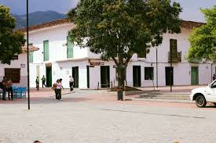
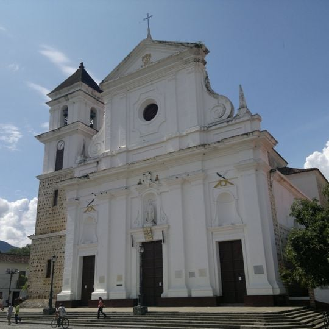
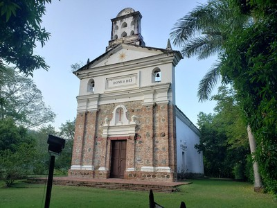
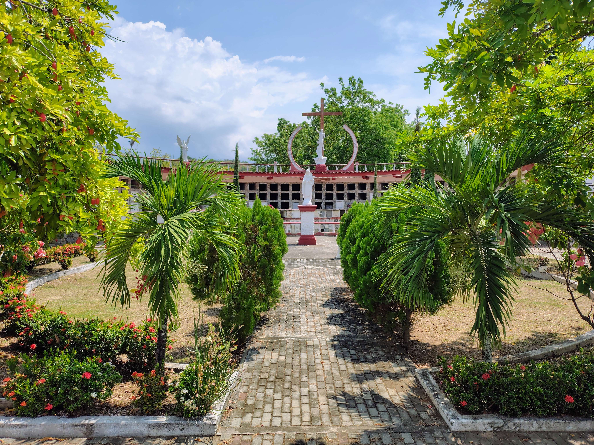
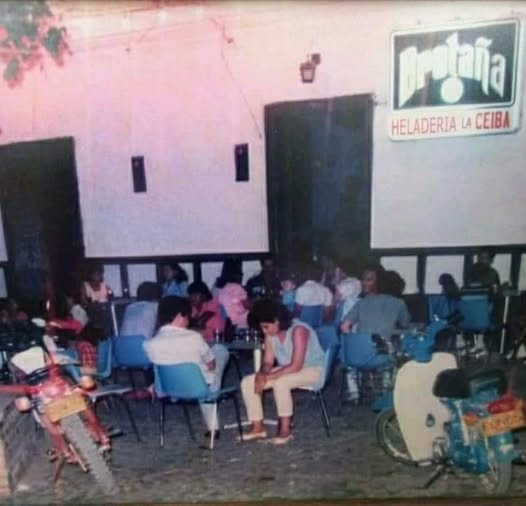
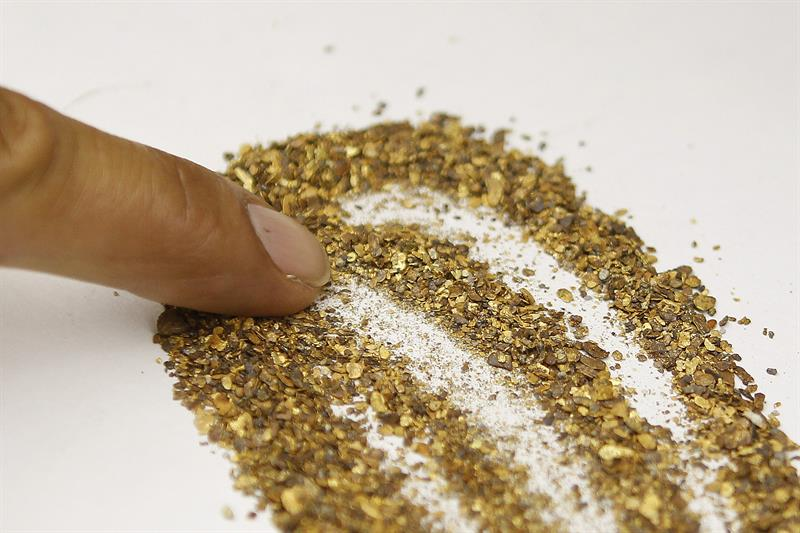
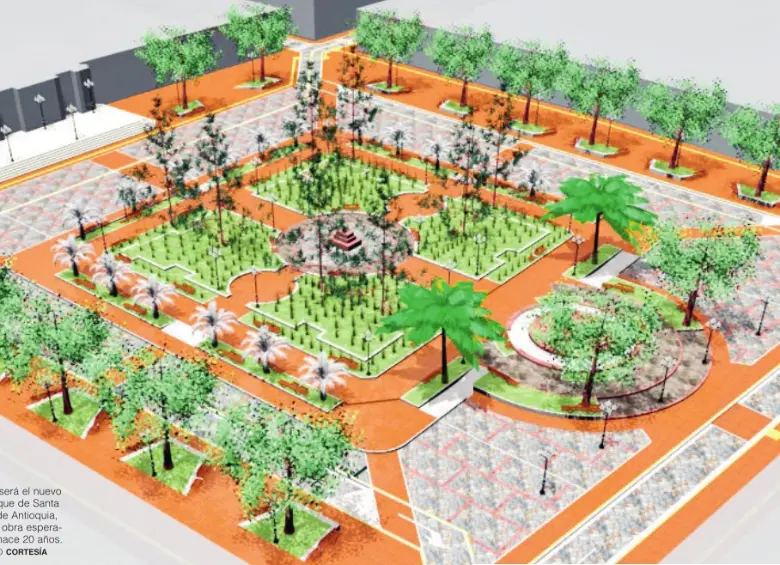
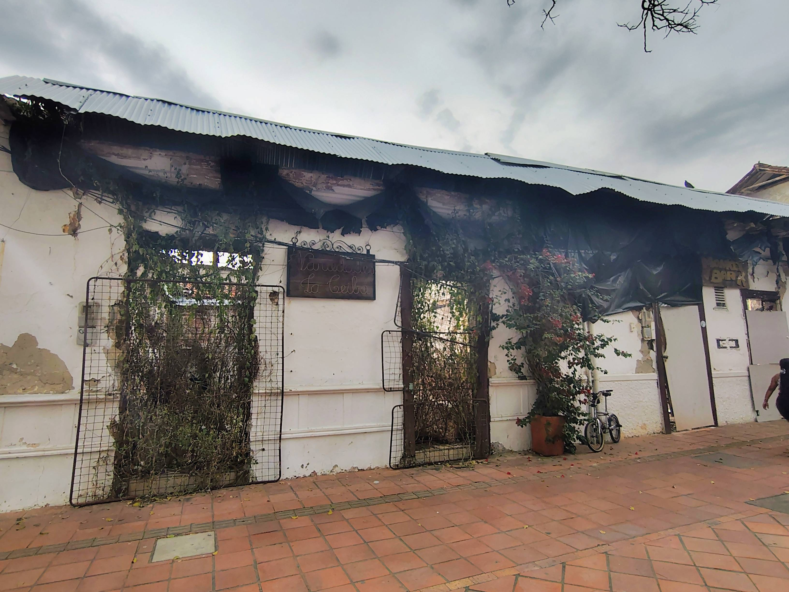

trayectoria lugares importantes del patrimonio

Antiguo hogar de la descendencia de Juan del Corral y centro de comercio (S. XVIII - XX). Sede de la banca que financió el Puente de Occidente y uno de los primeros centros comerciales de la región. Hoy alberga el Almacén Suyo (1948), aunque el resto de la estructura está en decadencia.

Principal templo de la arquidiócesis de Santa Fe de Antioquia, de estilo neoclásico con detalles de barroco popular. Declarado Monumento Nacional de Colombia por la Ley 163 del 30 de diciembre de 1959

Situada en la zona rural de Obregón, a 4 Km del área urbana en lo que hoy es una urbanización, lo que la convierte en una capilla privada. La Capilla fue construida en 1805, con un estilo neoclásico español.

Sirvió como cárcel de clérigos y cementerio fue clausurado por leyes de higiene que prohibía entierros urbanos, para asi evitar la propagación de enfermedades en la zona.

La Ceiba y Canta Claro se consolidan como espacios de encuentro para los enamorados y disfrute de buena música para los locales.

Descubrieron una zona cercana al pueblo donde se encontraba una mina de oro. Esto provocó que llegara gente de todas partes del país en busca de oportunidades. Debido al aumento de la población, comenzaron a abrir más discotecas y negocios en el lugar.

Se renovó las zonas peatonales y además, se restringió el tráfico vehicular en el atrio y alrededores para priorizar el tránsito peatonal y mejorar la experiencia turística.
Los toldos de la plaza fueron reubicados a la plaza de mercado, afectando el comercio local.

Deja en ruinas a la Ceiba (en ese momento una tienda de Variedades) y al Monkey Bar, quedándo hasta el día de hoy en completo abandono.